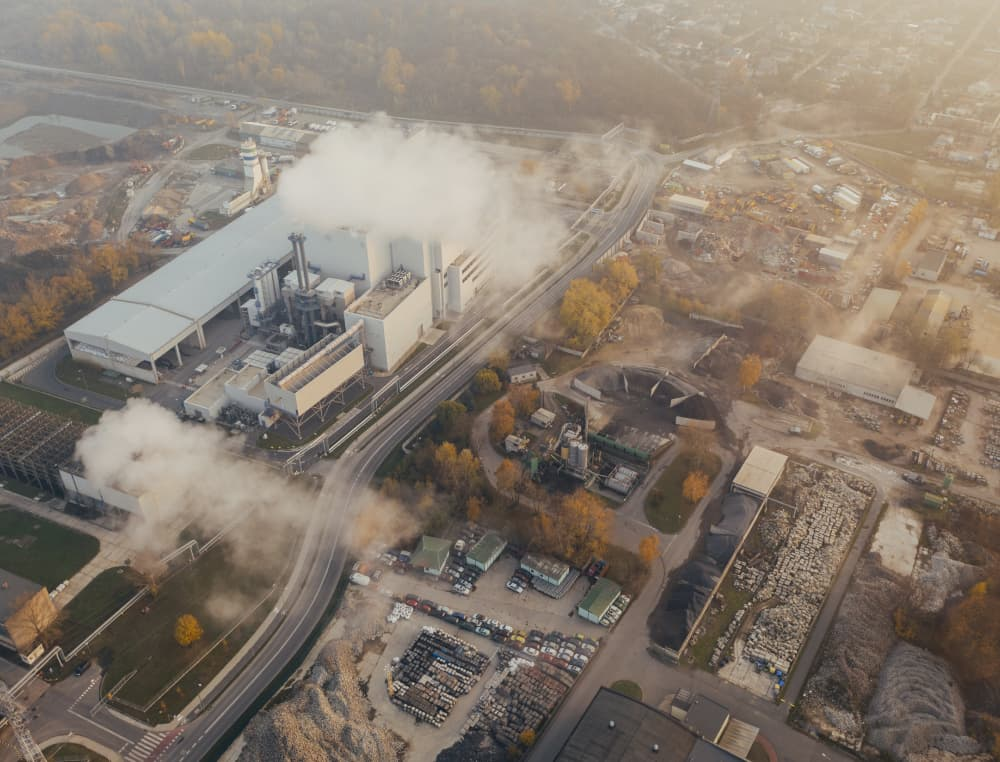

Empresa
Fundada em 2022, a TM Automação Industrial é uma empresa voltada para a evolução dos processos de manufatura, propondo soluções racionais e compatíveis com necessidades específicas, visando atingir o grau de excelência em qualidade e produtividade que o mercado exige.
Sobre nós